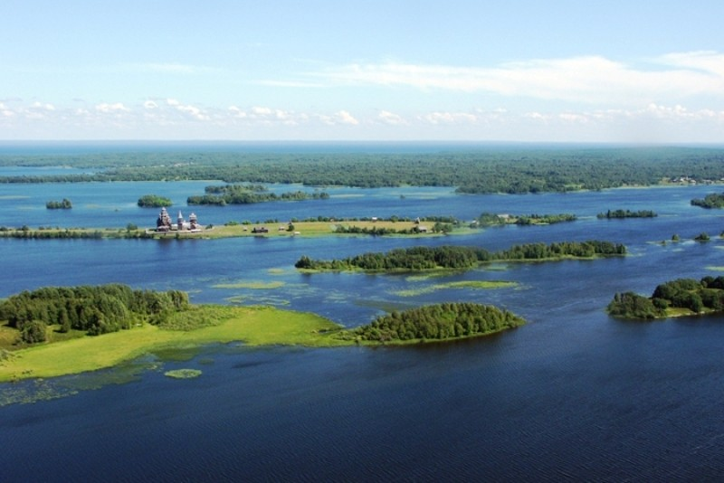

Что нужно увидеть в Карелии?
Озера Культура



Озера Карелии
-
Ладожское озеро
- Самое большое озеро в Европе, площадь около 9086 км².
- Известно своими живописными островами, такими как Валаам.
-
Онежское озеро
- Второе по величине озеро в Европе, площадь около 9700 км².
- На его берегах расположены древние карельские крепости, включая Кижи.
-
Сямозеро
- Одно из самых крупных озер Карелии, площадь около 253 км².
- Известно своими чистыми водами и красивыми пейзажами.
-
Водлозеро
- Площадь около 200 км², находится в Водлозерском национальном парке.
- Славится своей живописной природой и разнообразием флоры и фауны.
-
Лебяжье озеро
- Небольшое, но живописное озеро, расположенное в районе Сортавалы.
- Названо в честь лебедей, которые часто гнездятся на озере.
-
Костомукшское озеро
- Расположено в северо-западной части Карелии, площадь около 30 км².
- Вокруг озера находится множество заповедных территорий.
-
Пяозеро
- Площадь около 130 км², находится в северной части Карелии.
- Известно своими живописными берегами и является популярным местом для отдыха и рыбалки.
-
Сунозеро
- Небольшое озеро, площадь около 30 км².
- Известно своими чистыми водами и живописными окрестностями.
-
Селигер
- Находится частично в Тверской области, северные берега находятся в Карелии.
- Одно из самых красивых озер России, популярное среди туристов.
Культурные достопримечательности Карелии
-
Кижи
- Всемирное наследие ЮНЕСКО.
- Известно своими деревянными церквями, включая Спасо-Преображенскую церковь с 22 куполами.
-
Петрозаводск
- Столица Республики Карелия.
- Славится своими архитектурными памятниками и набережной, а также культурными мероприятиями.
-
Соловецкие острова
- Место расположения исторического Соловецкого монастыря.
- Является объектом Всемирного наследия ЮНЕСКО и важным центром русской истории.
-
Рускеала
- Известный мраморный каньон.
- Стало популярным туристическим направлением благодаря живописным ландшафтам и
возможностям для активного отдыха.
-
Костомукша
- Город, известный своими памятниками архитектуры.
- Славится культурными событиями и близостью к заповеднику "Костомукшский".
-
Валаам
- Остров в Ладожском озере.
- Знаменит Валаамским монастырем и уникальной природой, привлекающей паломников и туристов.
-
Петрокрепость
- Историческая крепость на острове в Ладожском озере.
- Известна своей архитектурой и историческим значением.
-
Музей деревянного зодчества
- Находится в Кижах.
- Представляет собой коллекцию уникальных деревянных построек,
отражающих традиционную архитектуру Карелии.
-
Национальный парк "Паанаярви"
- Известен своими природными красотами.
- Содержит культурные памятники, включая древние петроглифы.
-
Сортавала
- Город с богатой историей и культурой.
- Известен своими архитектурными памятниками и близостью к природным достопримечательностям.